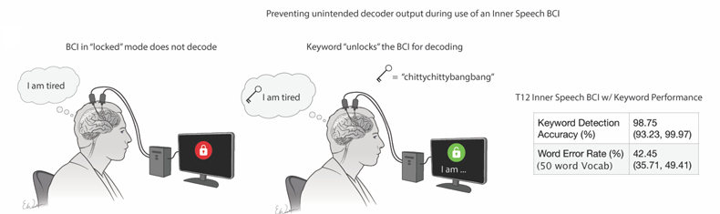

Can a brain implant read the voice in your head?
A brain implant caught sentences a person only imagined. The same study shows how limited, and how careful, that reading has to be.
There's a voice in your head right now, reading these words. You're not moving your mouth and you're not making a sound. For almost the entire history of neuroscience, that inner voice was private in the strongest possible sense, locked inside the skull with no way out.
A study published in Cell on August 21, 2025, by Erin Kunz, Frank Willett, and their colleagues at Stanford and the BrainGate project chips away at that. Working with four people who'd lost the ability to speak clearly, from ALS or a brainstem stroke, the team read words they were only imagining, straight from electrodes in the motor cortex, the strip of brain that plans movement.
What they actually did
The four were enrolled in the BrainGate2 trial, and each had thin arrays of microelectrodes sitting in the speech-movement part of the motor cortex, along the precentral gyrus. It's the same class of implant behind the earlier devices that let people with paralysis produce text by trying to talk. Three had ALS and one had a brainstem stroke, and all of them had lost clear speech. The task set up a clean contrast. In one condition the participant tried to physically speak, working the mouth and throat even when little or no sound came out. In the other they only imagined saying a word, with no attempt to move. The team recorded the firing of the neurons in each case and trained software to turn those patterns back into words.
Inner speech is a faint copy of trying to speak
The first result is the one that makes everything else possible. When a participant imagined a word, their motor cortex produced almost the same pattern as when they tried to say it out loud. The paper states it plainly.
“The representation of inner speech was highly correlated with attempted speech, though we also identified a neural ‘motor-intent’ dimension that differentiates the two.”
Kunz et al., Cell, 2025
So imagined speech isn't a separate secret code. It's a scaled-down version of the same motor plan, quieter but the same shape, weaker than a real attempt but pointing the same way. It wasn't a perfect copy, though. Alongside the shared pattern the team found a separate signal, that “motor-intent” dimension, marking whether you're truly trying to speak or only picturing it. Hold onto that difference, because it's what makes the privacy fix possible later. The voice in your head, it turns out, runs on the machinery for speaking, just turned down.
They decoded imagined sentences, imperfectly
Because inner and attempted speech share so much, a decoder trained only on attempted speech can already pick up imagined speech. That cross-over is the whole trick.
“When evaluating inner speech with a decoder trained solely on attempted speech, performance was above chance for all participants … indicating that a speech BCI trained only on attempted speech signals can decode inner speech.”
Kunz et al., Cell, 2025
How well? Here's the honest picture, and it's a range, not a headline. Reading freely imagined sentences from a vocabulary of 125,000 words, close to the full working vocabulary of English, the word error rate ran from about 26 to 54 percent across participants. One example block landed at 52 percent, with a 95 percent confidence interval of 42.1 to 61.8. On a smaller fixed set of 50 words it did better, missing 14 to 33 percent. That's far better than the near-total error you'd get guessing at random on a vocabulary that size, but it's nobody's clean transcript.
It helps to see what a run at that error rate actually looks like. These are real decodes of sentences one participant only imagined, on the full 125,000-word vocabulary.
The privacy problem, answered in the same paper
Here's the twist that traveled fastest. If a decoder built to help someone talk can also pick up imagined speech, it might quietly transcribe things the person never meant to say. The team showed the leak was real, decoding inner speech while participants silently counted or ran through a memorized sequence in their heads, with no intention of speaking at all. They named the worry directly.
“A concern raised by both researchers and potential users is ‘mental privacy’ … whether a speech BCI would ‘be able to read into thoughts or internal monologues of users.’”
Kunz et al., Cell, 2025
Their answer came in two parts, both leaning on that motor-intent signal from earlier. The first trains the decoder to treat inner speech as silence, so it stays tuned to real attempts to speak and lets private thoughts pass. The second is a keyword, a kind of mental password. The system stays locked until the user imagines a chosen phrase, in the study a deliberately silly one, “chitty chitty bang bang,” and only then begins decoding. In real-time tests it caught that keyword 98.75 percent of the time. It's rare to see a paper raise an obvious fear about its own technology and answer it in the same experiments.

What this does and doesn't mean
“Brain implant reads your inner voice” invites a far bigger claim than the study supports. This isn't mind reading. The device isn't pulling arbitrary thoughts, images, or feelings out of the brain. It reads the motor cortex's plan for speech, the pattern tied to moving the mouth, whether you speak, try to speak, or imagine speaking. Anything that never takes the shape of words on its way to the muscles stays beyond its reach. The authors are blunt about the ceiling.
“It was not possible to accurately decode complete, intelligible sentences during free-form thinking.”
Kunz et al., Cell, 2025
And the caveats stack up. This runs on electrodes surgically placed in the brain, in four people, on a limited vocabulary, and even then it gets a quarter to more than half the words wrong. Nothing here works from outside the head, and nothing here reads a person who hasn't chosen to take part. It's early, proof-of-concept work.
What it does show is real, and it matters for the people it's built for. For someone who's lost the ability to speak, imagining a word takes less effort than straining to force it out. The authors found the inner-speech route “required less effort, offered improved comfort, and bypassed physiological constraints” that slow attempted speech, and it points toward a device that could listen to that quieter attempt instead. It also flags, early and in the open, that such a device has to be built to listen only when its user wants it to.
The honest open question
The study shows that inner speech lives in the speech-motor system as a quieter copy of attempted speech. It doesn't show that all inner experience works this way, and it doesn't settle where the rest of thought, the part not headed for your mouth, actually lives. Even the privacy fixes are, in the authors’ own words, “initial explorations,” a first pass at a problem that gets sharper the moment these devices leave the lab.